J'ai découvert la programmation à l'âge de 10 ans en cherchant des tutoriels sur la création d'un logiciel sur Windows et j'ai appris à coder ma première application en Visual Basic avec Visual Studio qui était une calculette. J'ai depuis ce temps découvert ma passion pour la programmation, ce qui m'a encouragé à apprendre le langage C++. En septembre 2019, j'ai commencé à apprendre le langage Python au lycée en classe de Seconde grâce aux cours de SNT (Sciences Numériques et Technologie), et j'ai ainsi décidé de poursuivre la programmation en choisissant la spécialité NSI (Numérique et Sciences Informatiques) en classe de Première. J'ai ainsi fait le choix de ne pas abandonner cette matière en classe de Terminale.
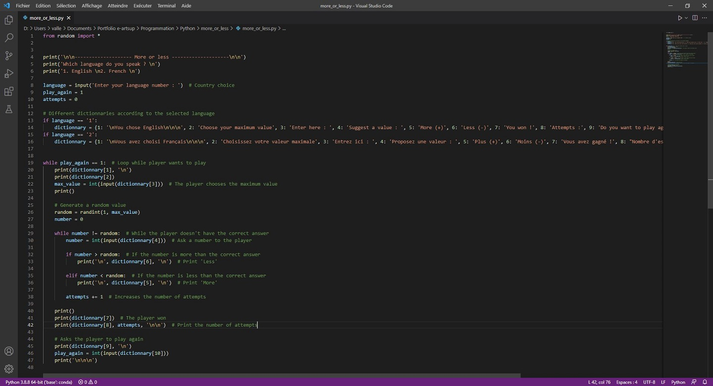
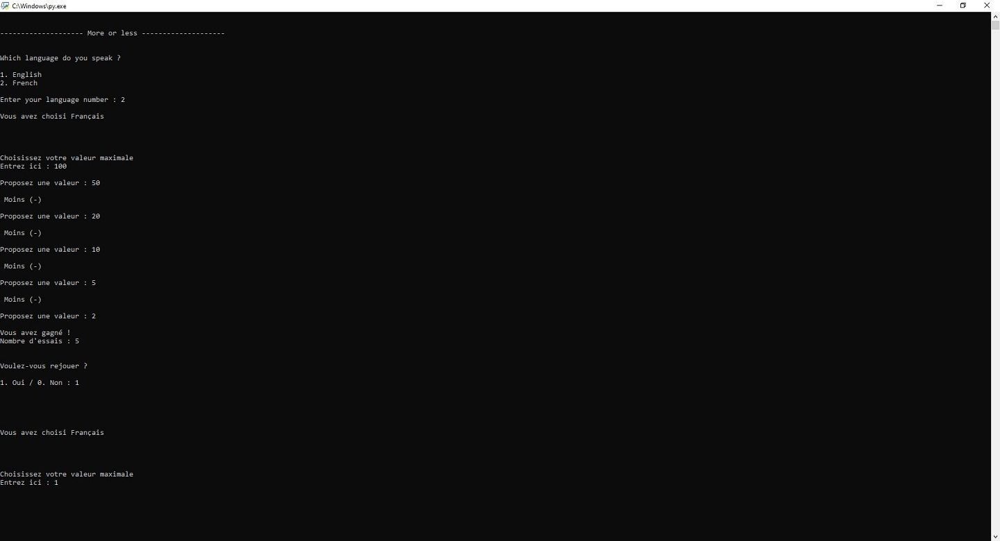
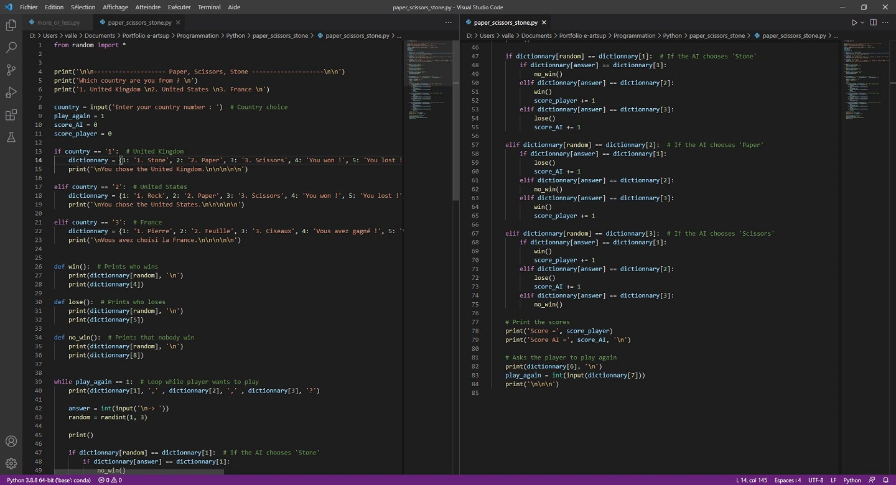
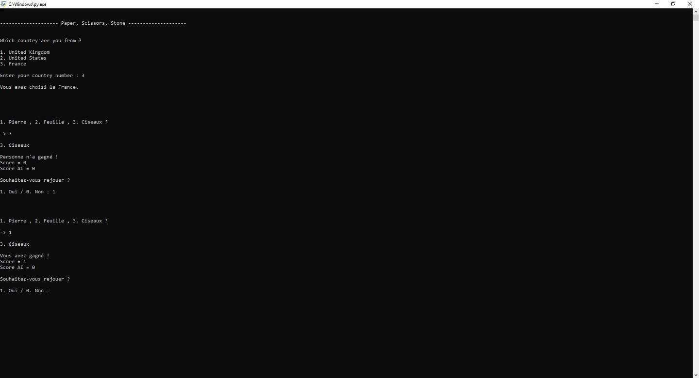
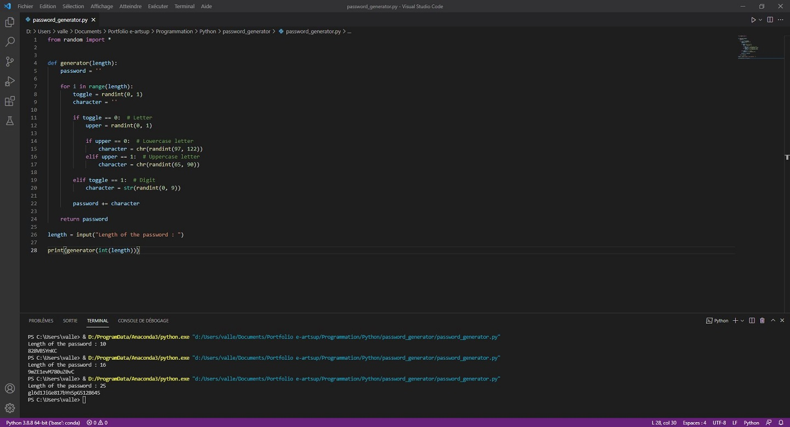
Étant passionné par le langage Python, j'ai ensuite décidé de m'orienter vers la programmation en langage C avec CodeBlocks. J'ai donc cherché une formation sur ce langage dans OpenClassrooms, ce qui m'a permis la programmation des projets suivants vus au cours de la formation :
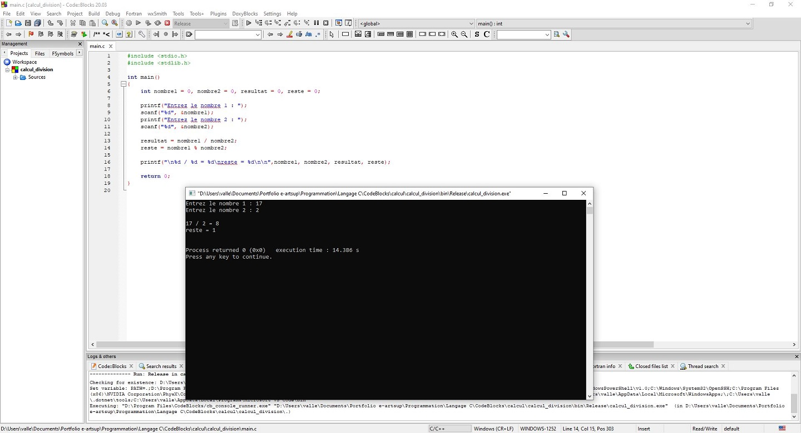
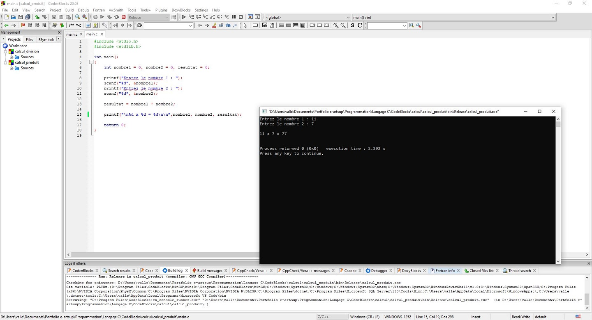
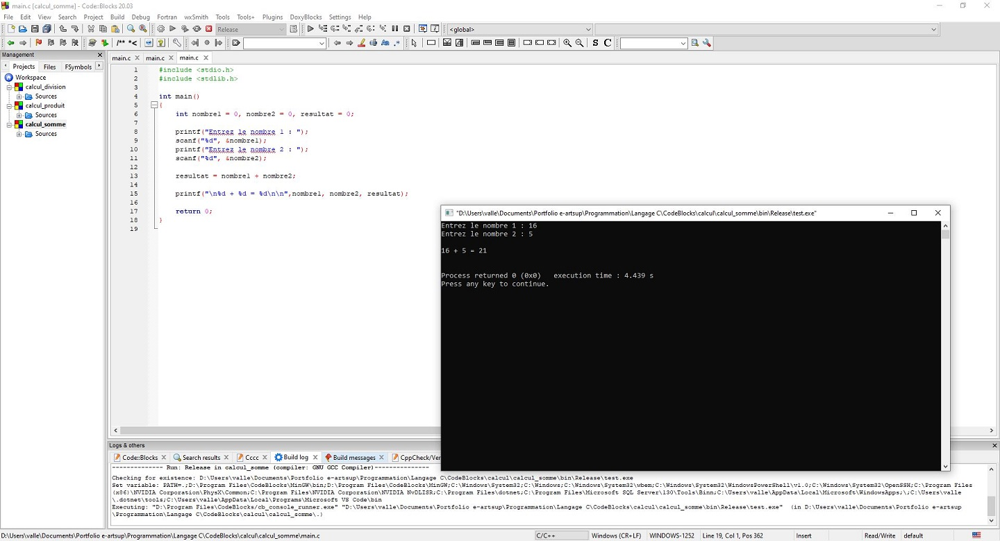
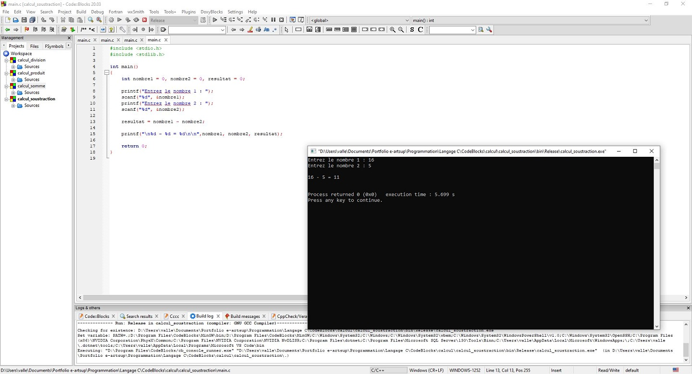
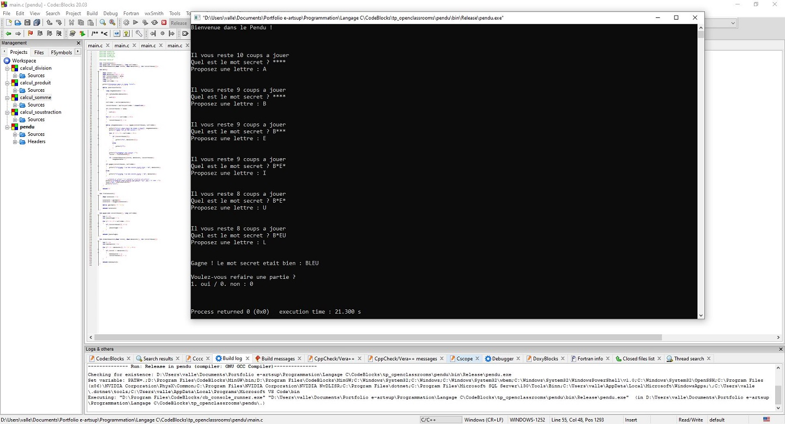
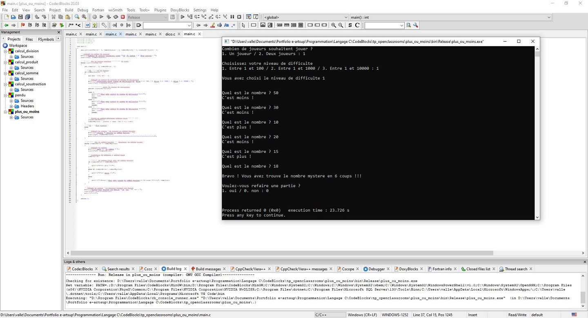
Avant d'entrer au lycée, j'ai commencé à apprendre le langage HTML grâce à un tutoriel trouvé sur YouTube. J'ai cependant revu le langage HTML et CSS en classe de Seconde en cours de SNT (Sciences Numériques et Technologiques) et en classe de Première en cours de NSI (Numérique et Sciences Informatiques). Ces différents apprentissages m'ont ainsi permis de développer ce site web pour présenter ce portfolio.